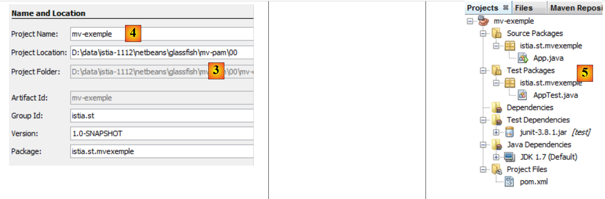
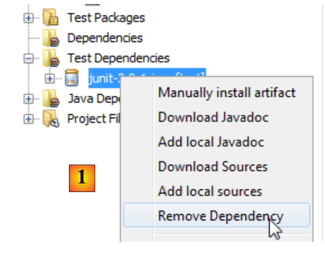
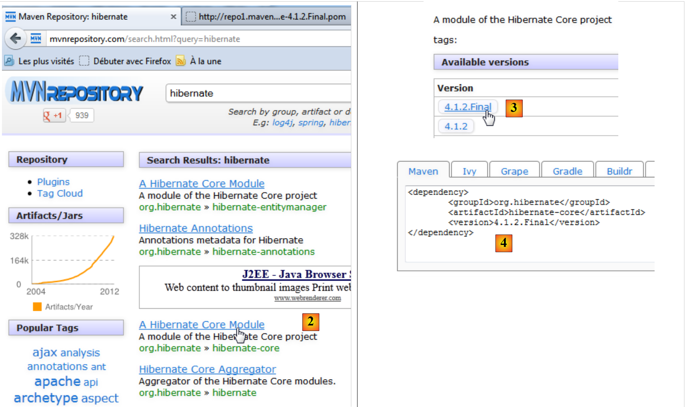

3. De tools in het document
De voorbeelden in dit document zijn getest met de volgende tools:
- NetBeans, van versie 6.8 tot versie 7.1.2. De installatie van NetBeans wordt beschreven in [ref3] in paragraaf 1.3.1.
- Wampserver versie 2.2. De installatie van WampServer wordt beschreven in [ref3] in paragraaf 1.3.3;
- Maven is geïntegreerd in NetBeans. We beschrijven deze tool nu.
3.1. Maven
3.1.1. Inleiding
Maven is beschikbaar op URL [http://maven.apache.org/index.html ]. Volgens de makers:
Het primaire doel van Maven is om een ontwikkelaar in staat te stellen de volledige status van een ontwikkelingsproject in zo kort mogelijke tijd te overzien. Om dit doel te bereiken, richt Maven zich op verschillende aandachtsgebieden:
- Het bouwproces vereenvoudigen
- Het bieden van een uniform buildsysteem
- Het verstrekken van hoogwaardige projectinformatie
- Richtlijnen bieden voor best practices bij de ontwikkeling
- Een transparante migratie naar nieuwe functies mogelijk maken
Maven is geïntegreerd in NetBeans en we gaan het gebruiken voor slechts één van zijn functies: het beheer van de bibliotheken van een project. Deze bestaan uit alle jars-archieven die in de Classpath van het project moeten staan. Het kunnen er heel veel zijn. Onze toekomstige projecten zullen bijvoorbeeld gebruikmaken van de Hibernate (Object Relational Mapper). Dit bestand bestaat uit tientallen jar-archieven. Het voordeel van Maven is dat we ze niet allemaal hoeven te kennen. We hoeven in ons project alleen maar aan te geven dat we Hibernate nodig hebben, door alle relevante informatie te verstrekken om het hoofdarchief van dit ORM te vinden. Maven downloadt dan ook alle bibliotheken die nodig zijn voor Hibernate. Dit noemen we de afhankelijkheden van Hibernate. Een bibliotheek die nodig is voor Hibernate kan zelf weer afhankelijk zijn van andere archieven. Deze worden dan ook gedownload. Al deze bibliotheken worden in een map geplaatst die de lokale Maven-repository wordt genoemd.
Een Maven-project is eenvoudig te delen. Als het van de ene computer naar de andere wordt overgezet en de afhankelijkheden van het project niet aanwezig zijn in de lokale repository van de nieuwe computer, worden ze gedownload.
Maven kan op zichzelf worden gebruikt of worden geïntegreerd in een IDE (Integrated Development Environment) zoals NetBeans of Eclipse.
Laten we een Maven-project aanmaken in NetBeans:
 |
- in [1], maak een nieuw project aan,
- in [2] de categorie [Maven] en het projecttype [Java Application] selecteren,
 |
- in [3], de bovenliggende map van de map van het nieuwe project aangeven,
- in [4], geef het project een naam,
- in [5], het gegenereerde project.
Laten we de onderdelen van het project bekijken en de rol van elk onderdeel toelichten.
 |
- in [1]: de verschillende takken van het project:
- [Source packages]: de Java-klassen van het project;
- [Test packages]: de testklassen van het project;
- [Dependencies]: de .jar-archieven die nodig zijn voor het project en die door Maven worden beheerd;
- [Test Dependencies]: de .jar-bestanden die nodig zijn voor de tests van het project en die door Maven worden beheerd;
- [Java Dependencies]: de .jar-bestanden die nodig zijn voor het project en niet door Maven worden beheerd;
- [Project Files]: configuratiebestanden van Maven en NetBeans,
 |
- in [3], de branch [Source Packages],
Deze branch bevat de broncode van de Java-klassen van het project. NetBeans heeft een standaardklasse gegenereerd:
package istia.st.mvexemple;
/**
* Hello world!
*
*/
public class App {
public static void main(String[] args) {
System.out.println("Hello World!");
}
}
 |
- in [4], de branch [Test Packages] die de broncode van de testklassen van het project bevat,
- in [5], de bibliotheek JUnit 3.8 die nodig is voor het uitvoeren van de tests,
NetBeans heeft een standaardklasse gegenereerd:
package istia.st.mvexemple;
import junit.framework.Test;
import junit.framework.TestCase;
import junit.framework.TestSuite;
/**
* Unit test for simple App.
*/
public class AppTest extends TestCase {
/**
* Create the test case
*
* @param testName
* name of the test case
*/
public AppTest(String testName) {
super(testName);
}
/**
* @return the suite of tests being tested
*/
public static Test suite() {
return new TestSuite(AppTest.class);
}
/**
* Rigourous Test :-)
*/
public void testApp() {
assertTrue(true);
}
}
Dit is een JUnit 3.8-test. Verderop zullen we JUnit 4.x-tests gebruiken.
 |
- in [6]; de tak [Dependencies] is hier leeg,
Deze tak toont alle bibliotheken die nodig zijn voor het project en die door Maven worden beheerd. Alle hier vermelde bibliotheken worden automatisch door Maven gedownload. Daarom heeft een Maven-project internettoegang nodig. De gedownloade bibliotheken worden lokaal opgeslagen. Als een ander project een bibliotheek nodig heeft die al lokaal aanwezig is, wordt deze niet opnieuw gedownload. We zullen zien dat deze lijst met bibliotheken en de repositories waar ze te vinden zijn, worden gedefinieerd in het configuratiebestand van het Maven-project.
 |
- in [7], de bibliotheken die nodig zijn voor het project en die niet door Maven worden beheerd,
 |
- in [7], het configuratiebestand [pom.xml] van het Maven-project. POM staat voor Project Object Model. We zullen dit bestand rechtstreeks moeten bewerken.
Het gegenereerde bestand [pom.xml] ziet er als volgt uit:
<project xmlns="http://maven.apache.org/POM/4.0.0" xmlns:xsi="http://www.w3.org/2001/XMLSchema-instance"
xsi:schemaLocation="http://maven.apache.org/POM/4.0.0 http://maven.apache.org/xsd/maven-4.0.0.xsd">
<modelVersion>4.0.0</modelVersion>
<groupId>istia.st</groupId>
<artifactId>mv-exemple</artifactId>
<version>1.0-SNAPSHOT</version>
<packaging>jar</packaging>
<name>mv-exemple</name>
<url>http://maven.apache.org</url>
<properties>
<project.build.sourceEncoding>UTF-8</project.build.sourceEncoding>
</properties>
<dependencies>
<dependency>
<groupId>junit</groupId>
<artifactId>junit</artifactId>
<version>3.8.1</version>
<scope>test</scope>
</dependency>
</dependencies>
</project>
- de regels 5-8 definiëren het Java-object (artefact) dat door het Maven-project zal worden aangemaakt. Deze informatie is afkomstig van de wizard die bij het aanmaken van het project is gebruikt:
 |
Een Maven-object wordt gedefinieerd door vier eigenschappen:
- [groupId]: informatie die lijkt op een pakketnaam. Zo hebben de bibliotheken van het Spring-framework groupId=org.springframework, die van het JSF-framework hebben groupId=javax.faces,
- [artifactId]: de naam van het Maven-object. In de groep [org.springframework] vinden we dus de volgende artifactId: spring-context, spring-core, spring-beans, ... In de groep [javax.faces] bevinden zich de artifactId en jsf-api,
- [version]: versienummer van het Maven-artefact. Het artefact org.springframework.spring-core heeft dus de volgende versies: 2.5.4, 2.5.5, 2.5.6, 2.5.6.SECO1, ...
- [packaging]: de vorm die het artefact aanneemt, meestal war of jar.
Ons Maven-project genereert een [jar] (regel 8) in de groep [istia.st] (regel 5), met de naam [mv-exemple] (regel 6) en versie [1.0-SNAPSHOT] (regel 7). Deze vier gegevens moeten een Maven-artefact op unieke wijze definiëren.
In de regels 17-24 staan de afhankelijkheden van het Maven-project vermeld, dat wil zeggen de lijst met bibliotheken die nodig zijn voor het project. Elke bibliotheek wordt gedefinieerd door vier gegevens (groupId, artifactId, versie, packaging). Wanneer de informatie packaging ontbreekt, zoals hier, wordt de packaging-jar gebruikt. Daar wordt nog een ander gegeven aan toegevoegd, namelijk scope, dat bepaalt op welke momenten in de levenscyclus van het project de bibliotheek nodig is. De standaardwaarde is compile, wat aangeeft dat de bibliotheek nodig is voor zowel het compileren als het uitvoeren. De waarde ‘test’ betekent dat de bibliotheek nodig is tijdens het testen van het project. Dit is hier het geval met de bibliotheek JUnit 3.8.1. Als deze bibliotheek niet aanwezig is in de lokale repository van de werkstation, wordt deze gedownload.
3.1.2. Het project uitvoeren
We voeren het project uit:
 |
In [1] wordt het Maven-project gebouwd en vervolgens uitgevoerd in [1]. De logboeken in de NetBeans-console zijn als volgt:
Het resultaat staat op regel 23. We zien dat Maven zelfs in dit eenvoudige geval elementen heeft gedownload (regels 17 en 20).
3.1.3. Het bestandssysteem van een Maven-project
 |
- [1]: het bestandssysteem van het project bevindt zich op het tabblad [Files],
- [2]: de Java-broncode bevindt zich in de map [src / main / java],
- [3]: de Java-broncodes van de tests bevinden zich in de map [src / test / java],
- [4]: de map [target] wordt aangemaakt tijdens de build van het project,
- [5]: hier heeft de build van het project een archief met de naam [mv-exemple-1.0-SNAPSHOT.jar] aangemaakt.
3.1.4. De lokale Maven-repository
We hebben gezegd dat Maven de benodigde afhankelijkheden voor het project downloadt en deze lokaal opslaat. We kunnen deze lokale repository verkennen:
 |
- in [1], kies je de optie [Window / Other / Maven Repository Browser],
- in [2], er wordt een tabblad [Maven Repositories] geopend,
- in [3] bevinden zich twee takken: één voor de lokale opslagplaats en één voor de centrale opslagplaats. Deze laatste is gigantisch. Om de inhoud ervan te bekijken, moet de index [4] worden bijgewerkt. Deze update duurt enkele tientallen minuten.
 |
- in [5], de bibliotheken van de lokale repository,
- in [6] vind je een branch [istia.st] die overeenkomt met de [groupId] van ons project,
- in [7] krijgt men toegang tot de eigenschappen van de lokale repository,
- in [8] staat het pad naar de lokale repository. Het is handig om dit te weten, omdat Maven soms (zelden) niet meer de nieuwste versie van het project gebruikt. We brengen wijzigingen aan en merken dat deze niet worden meegenomen. We kunnen dan handmatig de tak van de lokale repository verwijderen die overeenkomt met onze [groupId]. Dit dwingt Maven om de tak opnieuw aan te maken op basis van de laatste versie van het project.
3.1.5. Een artefact zoeken met Maven
Laten we nu leren hoe je een artefact kunt zoeken met Maven. Laten we uitgaan van de lijst met huidige afhankelijkheden van het bestand [pom.xml]:
<project xmlns="http://maven.apache.org/POM/4.0.0" xmlns:xsi="http://www.w3.org/2001/XMLSchema-instance"
xsi:schemaLocation="http://maven.apache.org/POM/4.0.0 http://maven.apache.org/xsd/maven-4.0.0.xsd">
<modelVersion>4.0.0</modelVersion>
<groupId>istia.st</groupId>
<artifactId>mv-exemple</artifactId>
<version>1.0-SNAPSHOT</version>
<packaging>jar</packaging>
<name>mv-exemple</name>
<url>http://maven.apache.org</url>
<properties>
<project.build.sourceEncoding>UTF-8</project.build.sourceEncoding>
</properties>
<dependencies>
<dependency>
<groupId>junit</groupId>
<artifactId>junit</artifactId>
<version>3.8.1</version>
<scope>test</scope>
</dependency>
</dependencies>
</project>
De regels 17-23 definiëren afhankelijkheden die we gaan aanpassen om de bibliotheken in hun meest recente versie te gebruiken.
 |
Allereerst verwijderen we de huidige afhankelijkheden [1]. Het bestand [pom.xml] wordt vervolgens aangepast:
<project xmlns="http://maven.apache.org/POM/4.0.0" xmlns:xsi="http://www.w3.org/2001/XMLSchema-instance"
xsi:schemaLocation="http://maven.apache.org/POM/4.0.0 http://maven.apache.org/xsd/maven-4.0.0.xsd">
<modelVersion>4.0.0</modelVersion>
<groupId>istia.st</groupId>
<artifactId>mv-exemple</artifactId>
<version>1.0-SNAPSHOT</version>
<packaging>jar</packaging>
<name>mv-exemple</name>
<url>http://maven.apache.org</url>
<properties>
<project.build.sourceEncoding>UTF-8</project.build.sourceEncoding>
</properties>
<dependencies></dependencies>
</project>
Op regel 17 komt de verwijderde afhankelijkheid niet meer voor in [pom.xml]. Laten we deze nu opzoeken in de Maven-repositories.
 |
- in [1] voegen we een afhankelijkheid toe aan het project,
- in [2] moeten we informatie opgeven over het gezochte artefact (groupId, artifactId, versie, packaging (Type) en scope). We beginnen met het specificeren van [groupId] [3],
- bij [4] typen we [espace] in om de lijst met mogelijke artefacten weer te geven. Hier zijn dat [junit] en [jnit-dep]. We kiezen [junit],
- en [5]; op dezelfde manier kiezen we de meest recente versie. Het type packaging is jar,
- en [6]; we kiezen het bereik ‘test’ om aan te geven dat de afhankelijkheid alleen nodig is voor tests.
 |
In [6] verschijnen de toegevoegde afhankelijkheden in het project. Het bestand [pom.xml] weerspiegelt deze wijzigingen:
<project xmlns="http://maven.apache.org/POM/4.0.0" xmlns:xsi="http://www.w3.org/2001/XMLSchema-instance"
xsi:schemaLocation="http://maven.apache.org/POM/4.0.0 http://maven.apache.org/xsd/maven-4.0.0.xsd">
<modelVersion>4.0.0</modelVersion>
<groupId>istia.st</groupId>
<artifactId>mv-exemple</artifactId>
<version>1.0-SNAPSHOT</version>
<packaging>jar</packaging>
<name>mv-exemple</name>
<url>http://maven.apache.org</url>
<properties>
<project.build.sourceEncoding>UTF-8</project.build.sourceEncoding>
</properties>
<dependencies>
<dependency>
<groupId>junit</groupId>
<artifactId>junit</artifactId>
<version>4.10</version>
<scope>test</scope>
<type>jar</type>
</dependency>
</dependencies>
</project>
Merk op dat het bestand [pom.xml] geen melding maakt van de afhankelijkheid [hamcrest-core-1.1] die we zien in [6]. Dit komt doordat het een afhankelijkheid is van JUnit 4.10 en niet van het project zelf. Dit wordt aangegeven door een ander pictogram in de tak [Dependencies]. Deze is automatisch gedownload.
Stel nu dat we de [groupId] van het gewenste artefact niet kennen. We willen bijvoorbeeld Hibernate gebruiken als ORM (Object Relational Mapper) en dat is alles wat we weten. Dan kunnen we naar de website [http://mvnrepository.com/] gaan:
 |
In [1] kun je trefwoorden invoeren. Laten we hibernate invoeren en de zoekopdracht starten.
 |
- in [2] kiezen we [groupId], org.hibernate en [artifactId], hibernate-core,
- in [3], kiezen we de versie 4.1.2-Final,
- in [4], krijgen we de Maven-code die we in het bestand [pom.xml] moeten plakken. Dat doen we.
<project xmlns="http://maven.apache.org/POM/4.0.0" xmlns:xsi="http://www.w3.org/2001/XMLSchema-instance"
xsi:schemaLocation="http://maven.apache.org/POM/4.0.0 http://maven.apache.org/xsd/maven-4.0.0.xsd">
<modelVersion>4.0.0</modelVersion>
<groupId>istia.st</groupId>
<artifactId>mv-exemple</artifactId>
<version>1.0-SNAPSHOT</version>
<packaging>jar</packaging>
<name>mv-exemple</name>
<url>http://maven.apache.org</url>
<properties>
<project.build.sourceEncoding>UTF-8</project.build.sourceEncoding>
</properties>
<dependencies>
<dependency>
<groupId>junit</groupId>
<artifactId>junit</artifactId>
<version>4.10</version>
<scope>test</scope>
<type>jar</type>
</dependency>
<dependency>
<groupId>org.hibernate</groupId>
<artifactId>hibernate-core</artifactId>
<version>4.1.2.Final</version>
</dependency>
</dependencies>
</project>
We slaan het bestand [pom.xml] op. Maven begint vervolgens met het downloaden van de nieuwe afhankelijkheden. Het project ontwikkelt zich als volgt:
 |
- in [5], de afhankelijkheid [hibernate-core-4.1.2-Final]. In de repository waar het is gevonden, wordt dit [artifactId] ook beschreven door een bestand [pom.xml]. Dit bestand is gelezen en Maven heeft ontdekt dat het [artifactId] afhankelijkheden had. Deze worden ook gedownload. Dit gebeurt voor elk gedownload [artifactId]. Uiteindelijk vinden we in [6] afhankelijkheden die we niet rechtstreeks hadden aangevraagd. Deze worden aangegeven met een ander pictogram dan dat van het hoofdbestand [artifactId].
In dit document gebruiken we Maven voornamelijk vanwege deze eigenschap. Hierdoor hoeven we niet alle afhankelijkheden te kennen van een bibliotheek die we willen gebruiken. We laten Maven deze beheren. Bovendien zijn we er, door een [pom.xml]-bestand tussen ontwikkelaars te delen, zeker van dat elke ontwikkelaar inderdaad dezelfde bibliotheken gebruikt.
In de voorbeelden die volgen, volstaan we met het vermelden van het gebruikte [pom.xml]-bestand. De lezer hoeft dit alleen maar te gebruiken om in dezelfde omstandigheden te komen als in het document. Bovendien worden Maven-projecten herkend door de belangrijkste Java-omgevingen (Eclipse, NetBeans, IntelliJ, JDeveloper). De lezer kan dus zijn favoriete IDE gebruiken om de voorbeelden te testen.